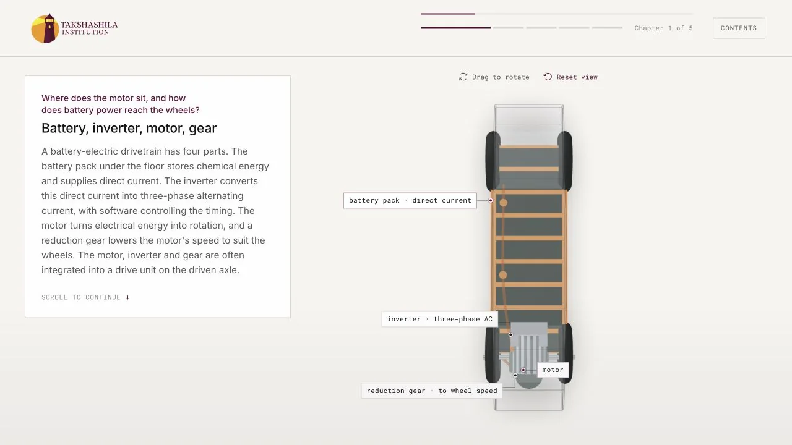
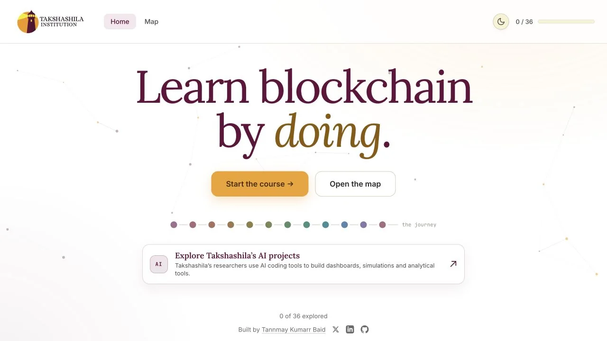
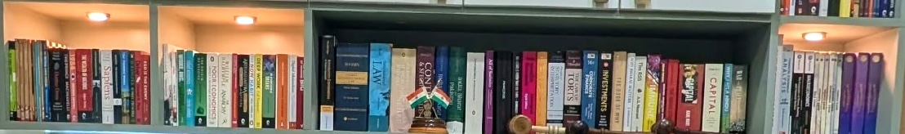
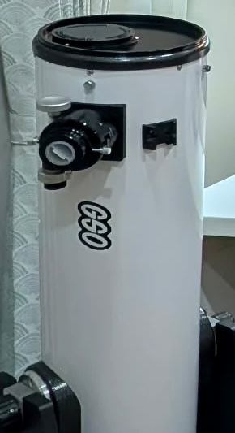

Tannmay Kumarr Baid
I’m a high-school student in Bengaluru working on critical minerals, technology and geopolitics.
I’m also a Junior Adjunct Scholar at The Takshashila Institution, a role created so I could continue alongside school after joining as its youngest intern.
Tools
51 minerals, ten vectors, six groups. A way to examine different supply bottlenecks without flattening them into a single criticality score.
Tannmay Kumarr Baid · Shobhankita Reddy
Why do EV motors need rare earths? A five-chapter walkthrough of how they work, the alternatives, and the trade-offs. Takshashila’s first 3D explainer.
Tannmay Kumarr Baid · Shobhankita Reddy · Pranay Kotasthane

A self-paced course for learning blockchain by doing, from cryptography and mining to programmable money and the role of the state.
Tannmay Kumarr Baid

Writing
- China’s chokehold on critical minerals is loosening, but not quicklyMoneycontrol, 24 Sep 2026 · Shobhankita Reddy · Tannmay Kumarr Baid · Pranay Kotasthane
- Critical minerals need priorities, not longer listsMoneycontrol, 6 Aug 2026 · Tannmay Kumarr Baid · Shobhankita Reddy
- What the Budget reveals about India’s critical minerals goalsMoneycontrol, 12 Feb 2026 · Shobhankita Reddy · Tannmay Kumarr Baid
- Rare earths sector can do with recycling thrustHindustan Times, 2 Feb 2026 · Pranay Kotasthane · Tannmay Kumarr Baid
- Inside the Tent: India and the Limits of Pax SilicaIndia’s World, 16 Jan 2026 · Pranay Kotasthane · Tannmay Kumarr Baid
- Rare earths in India: Bridging the gaps to ensure sufficiencyHindustan Times, 1 Dec 2025 · Tannmay Kumarr Baid · Pranay Kotasthane
- Pakistan is bluffing. There’s no proof for $6 trillion mineral wealth claimThePrint, 10 Nov 2025 · Pranay Kotasthane · Tannmay Kumarr Baid
- Beijing’s rare earth playbook is tired. It’s time India wrote its ownTimes of India, 19 Oct 2025 · Tannmay Kumarr Baid · Pranay Kotasthane
- Tracks Without TrainsThe Hindu, 8 Oct 2025 · Tannmay Kumarr Baid · Pranay Kotasthane
- Trump’s AI Strategy: Beyond the race for global supremacyMoneycontrol, 12 Aug 2025 · Tannmay Kumarr Baid · Bharath Reddy
- Brownfield mining operations are enough to meet India’s rare-earth needsMoneycontrol, 28 Jul 2025 · Tannmay Kumarr Baid
- The Way to Break China’s Stranglehold on Rare EarthsIndia’s World, 23 Jun 2025 · Tannmay Kumarr Baid · Pranay Kotasthane
- Severing the Hype: China’s Cable Cutter in PerspectiveStratNews Global, 29 Apr 2025 · Tannmay Kumarr Baid
- China’s rare-earth controls are not the masterstroke they seemTimes of India, 27 Apr 2025 · Tannmay Kumarr Baid · Pranay Kotasthane
Research
How India’s e-waste could become a source of rare earths, and why recycling incentives need to reward what is recovered, rather than its weight.
What Bengaluru’s delayed trains reveal about procurement rules, Chinese suppliers and the geopolitical risks hidden in the lowest bid.
I co-organised Politics and Policy of Critical Minerals with Shobhankita Reddy and taught a section of its first edition in May 2026 to a cohort of 65 participants.
Podcasts
Episodes of All Things Policy, Takshashila’s podcast, including a conversation with rare-earth scholar Julie Michelle Klinger.
- Are All Minerals Critical In The Same Way?26 Jun 2026Tannmay Kumarr Baid · Shobhankita Reddy
- Critical Minerals Partnerships24 Jun 2026Shobhankita Reddy · Tannmay Kumarr Baid
- India Should Double Down On Rare Earth Recycling18 Feb 2026Shobhankita Reddy · Tannmay Kumarr Baid
- Unpacking the New US National Security Strategy2 Jan 2026Lokendra Sharma · Brigadier Anil Raman (retd) · Tannmay Kumarr Baid
- Bengaluru’s Yellow Metro Line Through Geopolitical Tracks23 Sep 2025Lokendra Sharma · Tannmay Kumarr Baid
- Tackling Oil Spills in India’s Coastal Waters26 Aug 2025Lokendra Sharma · Swathi Kalyani · Tannmay Kumarr Baid
- Making Sense of the Geopolitics of Rare Earths14 Jul 2025Shobhankita Reddy · Tannmay Kumarr Baid · Dr Julie Michelle Klinger
- Trump’s Tariff Pause and Implications for India30 Apr 2025Tannmay Kumarr Baid · Anupam Manur · Anisree Suresh
- Signals from the Signal Chat Leak15 Apr 2025Lokendra Sharma · Manoj Kewalramani · Tannmay Kumarr Baid
- Inside the Lok Sabha: Who Really Cares About Foreign Policy?14 Apr 2025Dr Walter C. Ladwig III · Vanshika Saraf · Tannmay Kumarr Baid
- How Should India Navigate Tech Geopolitics?11 Apr 2025Lokendra Sharma · Avinash Shet · Tannmay Kumarr Baid
Off the clock
The library


Looking up
I built my first telescope at 12 from plumbing pipe. I now photograph the night sky with an 8-inch Dobsonian.
Collecting
More than 500 coins and notes from over 40 countries, collected since childhood.